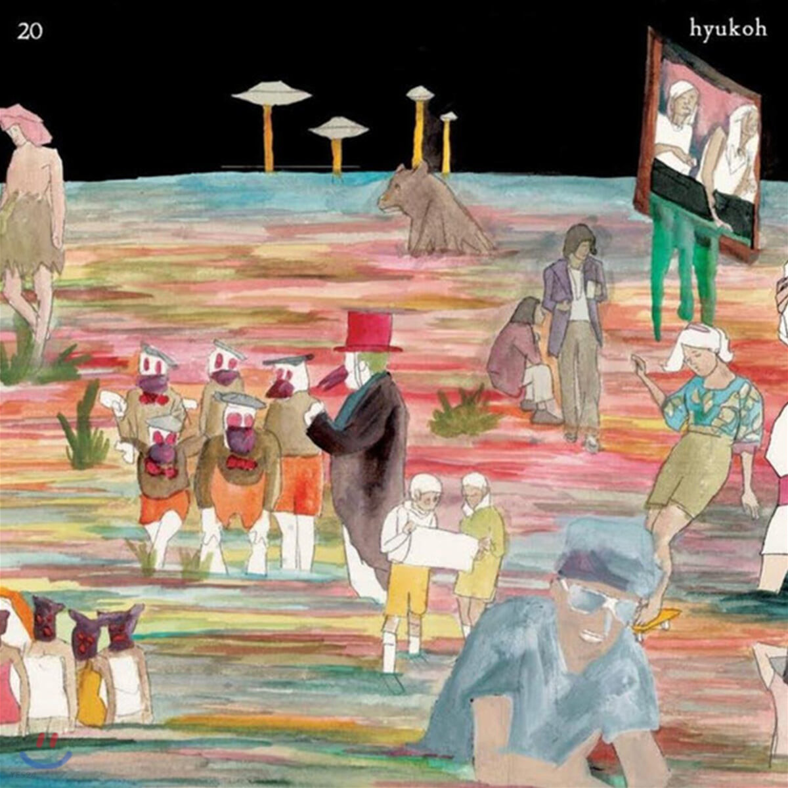

2014.09.18

- Lonely
- Feels Like Roller - Coaster Ride
- Ohio
- 위잉위잉
- Our Place
- I Have No Hometown
가사
Look back in bitterness
going back to broken piece of past
staying in memories
hesitating stepping forward to real
I’m stupid wanderer
wandering poor fellow
give up now to live in the peace
that we made before
Ohio gentle wave
on an ocean of recall
oh hi oh hi
I watch your pain
oh hi oh hi
the same as mine
Long story truly short
rewind it ever over again
hard to fine the rest
world without you never can stand
I’m stupid blind old man
deny such a bright light
give up glow to live in the peace
that we made before
Ohio gentle wave
on an ocean of recall
oh hi oh hi
I watch your pain
oh hi oh hi
the same as mine
Take me from your breath
let me down to back to real
I’ll erase you
set me free from you
know it’s hard to try
oh hi oh hi
I watch your pain
oh hi oh hi
the same as mine
oh hi oh hi I watch
your pain oh hi oh hi
the same as mine